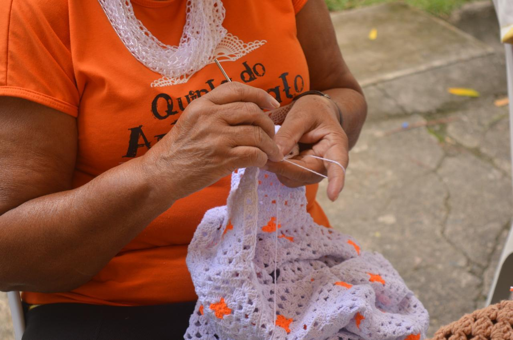
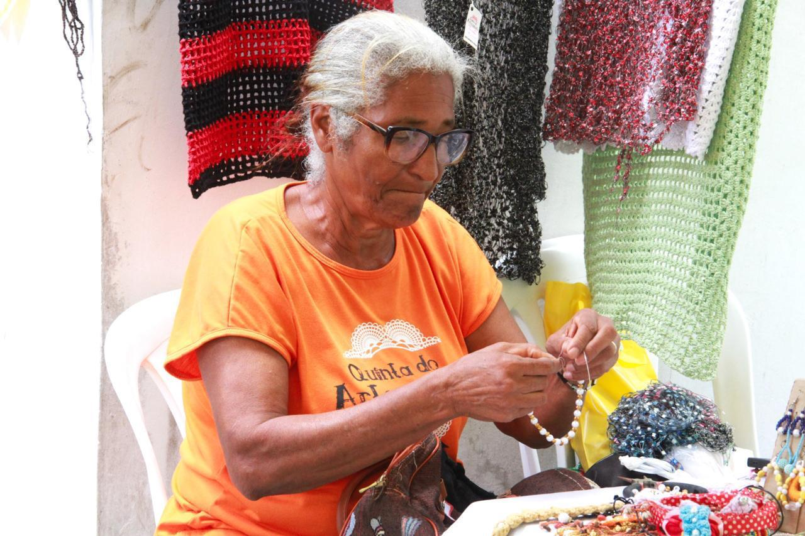
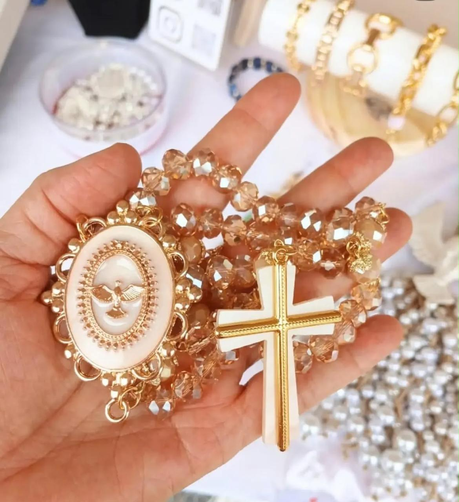
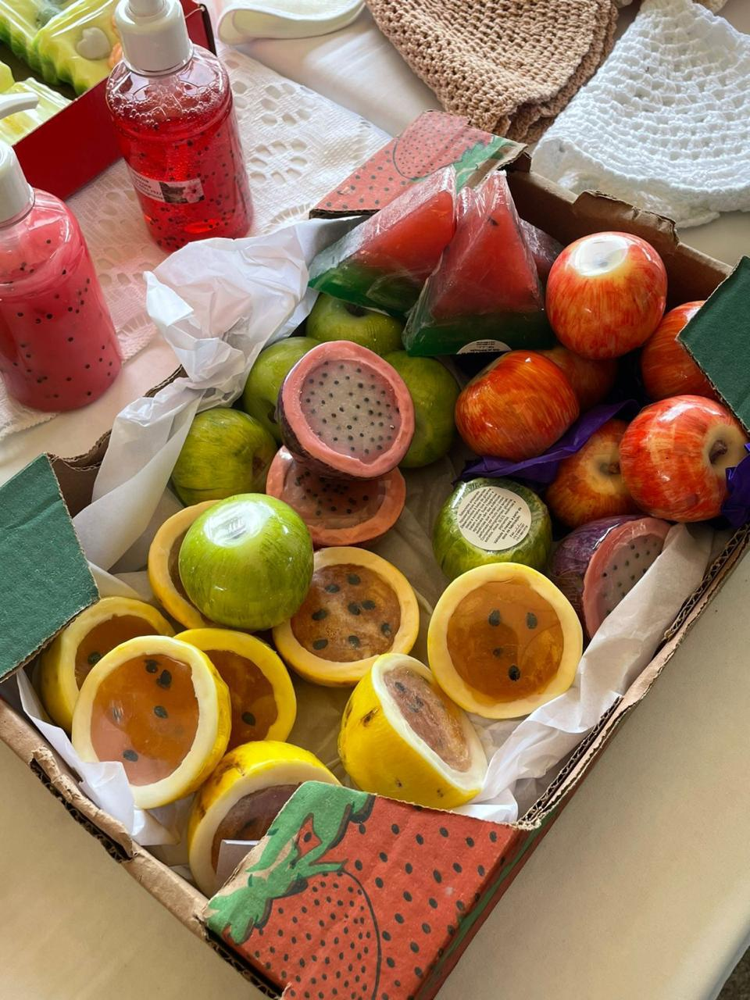

30 de Setembro
Oficina 1
Marketing Digital e Gestão de Estoques
Os feirantes aprenderam o caminho “do produto à publicação”: como transformar um item da banca em uma postagem clara e atrativa, com nome, descrição, preço, local de venda e contato para encomendas.
Em grupos e com apoio individual dos discentes, organizaram as informações dos próprios produtos e refletiram sobre o controle consciente de estoque e aproveitamento da produção.



